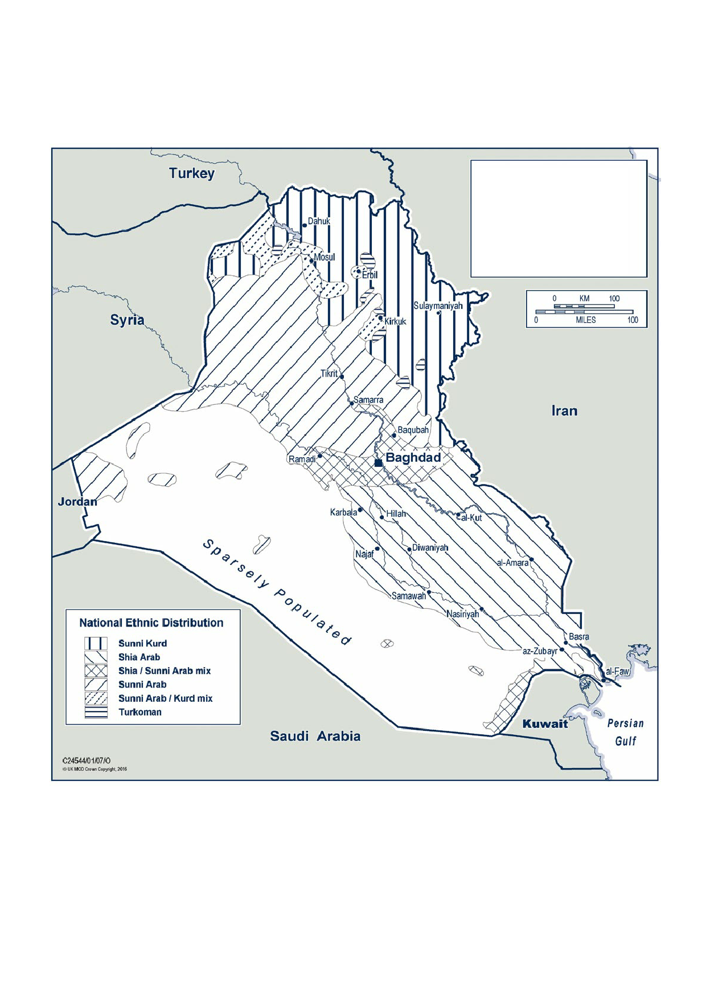

Annex
4 | Maps
NOTES:
• There is
little reliable demographic data for Iraq.
In addition,
the most recent census in 1997 was
based on
ethnicity only and did not record
confessional
differences.
• Arab Shia
estimated to be 60% of population.
• Many,
especially in cosmopolitan areas such as
Baghdad and
Basra are intermarried with
Sunni Arab.
• Unknown
number of Kurdish Shia.
• Sunnis
present in all Southern Provinces,
mainly in
urban areas.
This map was
produced from information used in the compilation of Iraq: Map
Book, Defence Intelligence Staff, 17 March 2006.
319